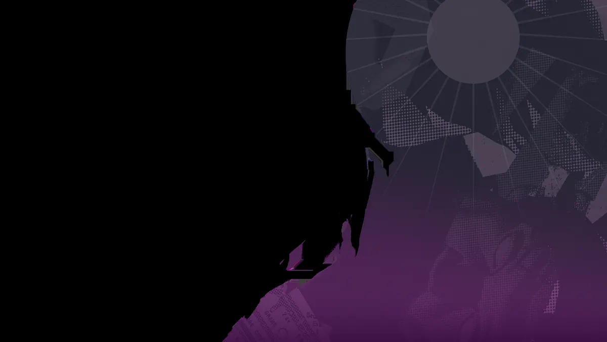
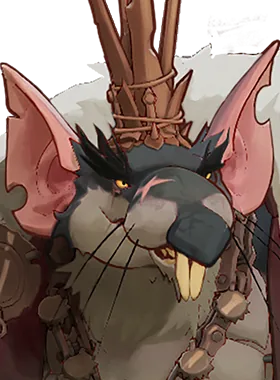
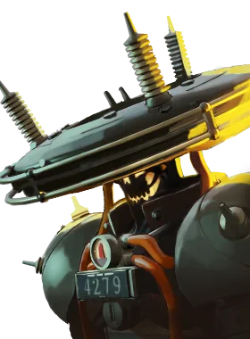
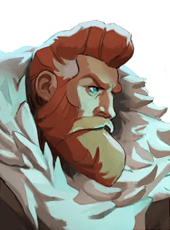
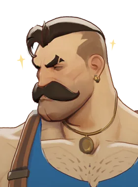
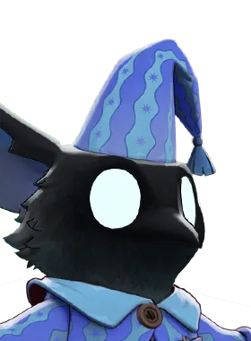

Caçador de alvos prioritários, preferência por distância.
História
Os Venadores de São Bento são uma ordem sancionada pelo Vaticano cujos membros são enviados para regiões com alta concentração de predadores sobrenaturais. Poucos em número, seu modus operandi é observar, identificar e exterminar. Eles são metódicos, precisos e, uma vez identificadas uma ameaça ao rebanho, são implacáveis.
Mas mesmo entre aqueles que são chamados de A Espada de São Bento, um se destaca dos outros. Um homem cujo coração endurecido lhe permitiu pagar preços terríveis em nome de um bem maior... e ele foi mais uma vez enviado para Nova Iorque.
História oficial do jogo, traduzida automaticamente para o português.
Números reais
Habilidades
Dispara uma granada quicante que explode, fere e incendeia inimigos, causando dano puro e reduzindo a cura.
Dispara um tiro de espingarda que fere e empurra inimigos; os perto de uma parede ficam atordoados e sofrem dano extra.
Chuta uma armadilha que se arma após um instante e fecha no primeiro herói inimigo que tocar, causando dano espiritual, imobilizando e revelando.
Carrega a besta com três estacas de dano pesado, sendo a última abençoada para causar dano puro extra e executar inimigos com pouca vida.
Builds mais usadas
11.722 partidas registradas com esta build.
Tiro Restaurador (800) · Rodadas Monstruosas (800) · Rodadas rápidas (800) · Sacrifício de Cultista (3.200) · Atacante Rápido (1.600) · Colete de Batalha (1.600) · Revista Titânico (1.600) · Velocidade duradoura (1.600) · Tiros ponderados (3.200) · Pé Ligeiro (1.600)
10.817 partidas registradas com esta build.
Tiro Restaurador (800) · Perto (800) · Revista Intensificadora (1.600) · Atacante Rápido (1.600) · Velocidade duradoura (1.600) · Fortaleza (3.200) · Regeneração Extra (800) · Grão (800) · Revista Estendida (800) · Colete de Batalha (1.600)
10.605 partidas registradas com esta build.
Tiro Restaurador (800) · Perto (800) · Saúde Extra (800) · Enfraquecimento do tiro na cabeça (1.600) · Atacante Rápido (1.600) · Colete de Batalha (1.600) · Fortaleza (3.200) · Pé Ligeiro (1.600) · À queima-roupa (3.200) · Ponta Oca (3.200)
Confrontos reais
- Shiv — 52.6% de vitória
- Pocket — 51.9% de vitória
- Mirage — 51.6% de vitória
 Deadman Danny — 51.5% de vitória
Deadman Danny — 51.5% de vitória- Silver — 51.5% de vitória
- Solomon — 51.5% de vitória

Rat King — 38.8% de vitória- Paige — 39.9% de vitória
- Graves — 40.2% de vitória

Seven — 42.4% de vitória- Victor — 42.8% de vitória

Kelvin — 43.3% de vitória
Ver a página de counters do Venator
O que upar primeiro
Nível por nível, na ordem que os jogadores mais usam em partidas de verdade. A porcentagem mostra quantos escolheram aquela habilidade naquele nível.
Melhores duplas
Heróis que mais ganham jogando junto com ele, em partidas reais (pelo menos 1.500 partidas juntos).
- Rat King54,7%
- Graves54,3%
- Paige54,0%
- Seven53,6%
- Kelvin52,6%
- Shiv40,6%
- Mirage41,1%
- Solomon41,7%
Rota (lane)
Na rota, cada lado joga em dupla. Estes números são de confrontos reais: a diferença de almas é medida com o jogo já começado, então almas no verde significa que ele costuma estar na frente.
- Rat King — 38,5% de vitória −84 almas (12.050 partidas)
- Paige — 38,9% de vitória +404 almas (2.330 partidas)
- Graves — 39,7% de vitória +677 almas (3.679 partidas)
- Dynamo — 40,4% de vitória +637 almas (1.192 partidas)
- Seven — 41,4% de vitória +235 almas (2.519 partidas)
- Apollo — 42,6% de vitória −160 almas (392 partidas)
- Baba — 43,2% de vitória +940 almas (2.249 partidas)

Lash — 43,6% de vitória +474 almas (3.484 partidas)

Rem — 53,4% de vitória +437 almas (2.103 partidas)- Shiv — 53,1% de vitória +866 almas (1.246 partidas)
- Lady Geist — 52,6% de vitória +58 almas (171 partidas)
Histórico de win rate
01/02: 46.6% → 01/03: 48.3% → 29/03: 46.6% → 26/04: 46.5% → 24/05: 45.3% → 21/06: 46.7% → 19/07: 45.7% → 16/08: 45.5% → 13/09: 45.1% → 11/10: 47.6%